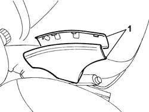
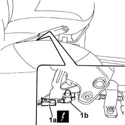

5550D18 handbrake on warning light switch - r+r
- Path
- Procedures > 55 ELECTRICAL EQUIPMENT > 5550 MANOEUVRING AND WARNING SIGNALS > 5550D brake and reversing lights > 5550D18 handbrake on warning light switch - r+r
- Kind
- repair procedure (removal / refitting; the operation number is the code)
- Applies to
- all engines; all production periods
- Interactive page
- https://sloeber94.github.io/elrnDB-fDbl/en/#/2584959
Applies to: all engines; all production periods
 Removing
Removing
 Refitting
RefittingDisconnect the battery negative terminal.
1. Open and remove the handbrake lever trim.

Applies to: all engines; all production periods
1. Disconnect the electrical connector (1a) and remove the handbrake 'on' switch (1b) from its seating.
 | Name | Connector |
|---|---|---|
1a | Handbrake "on" switch |

Applies to: all engines; all production periods
Refitting
RemovingFit the switch in its seating and connect the electrical connector.
| Name | Connector |
|---|---|---|
- | Handbrake "on" switch |
Fit the handbrake lever trim.
Connect the battery negative terminal.
Check that the switch is working properly be applying the handbrake and checking that the warning light on the instrument panel comes on.